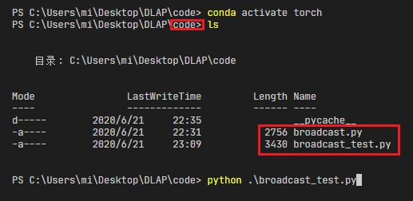
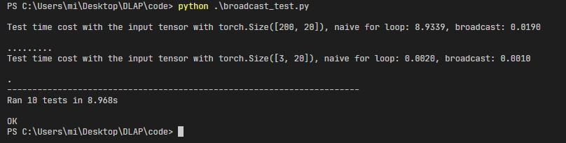

Broadcast¶
Exercises¶
Calculate similarity matrix with 3 different methods cos, l1, and l2
Input
=====
input_x: A Tensor with the shape in [batch_size, feature_size]
method: A string indicates the similarity metric method, including cos, l1, and l2.
Output
======
similarity_matrix: A Tensor with the shape in [batch_size, batch_size]
Tip
Try to use the broadcast mechanism instead of using for loop to implement it.
For Loop 实现¶
为了方便理解任务需求，可以阅读基于for循环实现的代码。
import torch
def naive_pairwise_similarity(input_x: torch.Tensor, method: str) -> torch.Tensor:
'''
Calculate similarity matrix with 3 different methods cos, l1, and l2.
This is a naive implementation with for loop.
Input
=====
input_x: A Tensor with the shape in [batch_size, feature_size]
method: A string indicate the similarity metric method
Output
======
similarity_matrix: A Tensor with the shape in [batch_size, batch_size]
'''
method_list = ('cos', 'l1', 'l2')
if method not in method_list: raise ValueError("only support method in {}".format(method_list))
eps = 1e-23
batch_size = input_x.size(0)
similarity_matrix = torch.zeros(batch_size, batch_size)
for i in range(batch_size):
for j in range(batch_size):
if method == 'cos':
x = input_x[i]
y = input_x[j]
inner_product = (x * y).sum()
x_norm = x.square().sum().sqrt()
y_norm = y.square().sum().sqrt()
norm_product = x_norm * y_norm
similarity_matrix[i, j] = inner_product / (norm_product + eps)
elif method == 'l1':
sub = input_x[i] - input_x[j]
similarity_matrix[i, j] = sub.abs().sum()
elif method == 'l2':
sub = input_x[i] - input_x[j]
similarity_matrix[i, j] = sub.square().sum().sqrt()
return similarity_matrix
练习文件¶
本地测试¶
将下载的两个文件置于同一个文件下，切换到文件所在目录与所需的python环境后，完成broadcast.py中对应的函数，如下图所示：

直接运行python broadcast_test.py进行测试，这个脚本会测试计算结果的正确性以及耗时，通过测试后得到的结果如图所示：

可以看到使用for实现的函数远远不如广播机制来的高效。
可能的答案¶
pairwise_similarity
def pairwise_similarity(input_x: torch.Tensor, method: str) -> torch.Tensor:
'''
Calculate similarity matrix with 3 different methods cos, l1, and l2
Input
=====
input_x: A Tensor with the shape in [batch_size, feature_size]
method: A string indicate the similarity metric method
Output
======
similarity_matrix: A Tensor with the shape in [batch_size, batch_size]
'''
method_list = ('cos', 'l1', 'l2')
x = input_x.unsqueeze(0)
y = input_x.unsqueeze(1)
eps = 1e-23
similarity_matrix = None
if method == 'cos':
inner_product = (x * y).sum(dim=-1) # [b, b]
x_norm = x.square().sum(dim=-1).sqrt() # [1, b]
y_norm = y.square().sum(dim=-1).sqrt() # [b, 1]
norm_product = x_norm * y_norm # [b, b]
similarity_matrix = inner_product / (norm_product + eps)
elif method == 'l1':
sub = x - y # [b, b, f]
similarity_matrix = sub.abs().sum(dim=-1)
elif method == 'l2':
sub = x - y # [b, b, f]
similarity_matrix = sub.square().sum(dim=-1).sqrt()
else:
raise ValueError("only support method in {}".format(method_list))
return similarity_matrix